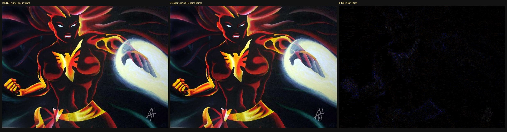
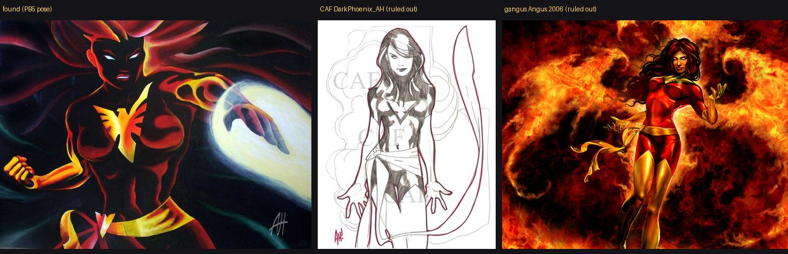

Signed Dark Phoenix find — same pose as Flair PB5
Collector find: horizontal Dark Phoenix with left-hand energy blast + right fist at hip, brighter/cleaner background than the card, and a light monogram in the lower-right. Compared to Flair Powerblast #5 and traced on the open web.


Signature read
Enhanced crop of the lower-right mark:


- Best reading: interlocking “AH” — slanted A sharing a vertical stem with H; one continuous crossbar through both letters. Matches the well-known Adam Hughes monogram form.
- Classic published Hughes marks are usually AH! (with bang). At this resolution a distinct “!” is not clearly readable — so treat as AH-like, not a locked ID.
- Style caveat: this piece is painted / airbrush-noir with rim fire. Hughes’s early-’90s published Marvel/DC work is mostly pen-and-ink “good girl,” though he did occasional painted pieces later. Style alone does not confirm him.
- Other AH candidates checked and not supported by this mark/style: Alex Horley (usually full name / different mark), Glen Angus portfolio Phoenix pieces from Raven/X-Men Legends (different compositions).
Web origin (what we can prove)
- Yandex reverse-image on the found file lands on dreager1.com copies of the same frame (802×589), used uncredited as Jean Grey decoration on vs-battle posts.
- Live paths:
…/wp-content/uploads/2011/01/dark_phoenix.jpg…/wp-content/uploads/2012/05/dark_phoenix.jpg(used on the May 13, 2012 “Jean Grey vs Scarlet Witch” post; reused again in 2022)
- Pixel check: dreager JPEG is a heavier recompress of the same painting (mean RGB diff ≈ 0.29). The collector find is a cleaner scan of that same image — not a new composition.
- dreager1 posts never credit an artist. TinEye / ComicArtFans / Google Lens paths were bot-walled from this environment; no CAF original listing for this exact blast pose was confirmed.
- Chris Klamer’s CAF room lists a piece titled “Dark Phoenix (AH)” by Adam Hughes — could be related or a different sketch; CF blocked automated fetch of the piece page.

Internet Archive / Wayback hunt (2026-10-21)
Targeted CDX + live downloads for the 802×589 frame and lookalike dark_phoenix.jpg hosts. Evidence files under archive-hunt/.
- dreager1
dark_phoenix.jpg(2011/01 & 2012/05 paths): live copies still serve the same 802×589 JPEG (46,163 bytes; Wayback digestAVW7D26KYQDLW2JKYIOY27VSZIHVHIAU). CDX + availability both return no archived snapshots for the image URLs or the May 13, 2012 “Jean Grey vs Scarlet Witch” post. Homepage captures exist from 2012-06-30 onward, but the upload itself was never crawled. Digest filter over*.jpgalso empty — this byte-identical file is not elsewhere in Wayback under that digest. - Found scan digest
OLRNGWQAMRCDNVRCVXDJKAEHHNUVQMH5: likewise not in Wayback. No EXIF artist/date (JFIF 72dpi + empty Photoshop IRB). - gangus.net
X2 update/dark_phoenix.jpg: heavily archived from 2006-07-01 (digestP6OLVN66ER3CIUFYGF5XJNHA626GGXWF, 900×720). Photoshop EXIF2005:10:23. Pixel corr vs found ≈ 0.02 — Glen Angus Raven/X2 art, different painting. Kept as a filename collision exclusion. - CAF Chris Klamer “Dark Phoenix (AH)” (piece
148691, gallery roomgsub=7667):- Room HTML archived 2014-09; tip text: Adam Hughes, Pencil commission, added to CAF 2006-03-26.
- Thumb on CDN archived 2012-10-16 (156×200). Full
DarkPhoenix_AH.JPGarchived 2026-01-14 (721×925, digestBA67AUWCXDDXN23N3PPHWGLHHCAGEIKE). - Pixel corr vs found ≈ 0.00 — different piece (portrait pencil vs horizontal airbrush blast). Does not confirm the AH reading on our find; it only shows Klamer owns a separate AH Dark Phoenix commission.
- Piece page itself has no Wayback snapshot; live CAF fetch blocked from this environment.
- Common Crawl: index API mostly 504/404 for 2012–2024 dreager queries during this pass; not used as negative proof.
- archive.ph: 429 rate-limited; no extra mirrors confirmed.
- Geocities / Angelfire / Photobucket / imageshack / deviantart.net CDX probes for
dark_phoenix.jpgreturned empty or timed out — no earlier public host found via those exact patterns.

PB5 research status
- Pose: MATCH to Flair Powerblast #5 (the long-standing “except possibly Phoenix” card).
- Artist: UNKNOWN — Adam Hughes is still the leading signature hypothesis; CAF’s titled “Dark Phoenix (AH)” is a different commission and does not settle it.
- Publish date: UNKNOWN pre–June 1994. Earliest provable open-web copy remains the live dreager1 2011/2012 upload; Wayback never archived that file. No pre-2011 archive hit for this frame yet.
- SOURCE_ART.pb05: still not installed. Checklist already marks PB5 as “Suspected unused in print. Not yet found in other media.” This find is the strongest pre-CGI candidate yet, but artist/date still open.
Research notes · 2026-10-21 · do not credit Adam Hughes on the live checklist until the AH! mark is verified against authenticated samples or a CAF/eBay listing of this exact piece.